地政学
ロサンゼルスは太平洋岸の港湾、空港、軍需産業、アジア太平洋との交易を抱える都市圏です。メキシコ国境にも近く、移民、物流、安全保障、気候災害が重なります。海と山の間で世界と強く接続し続けていますね。
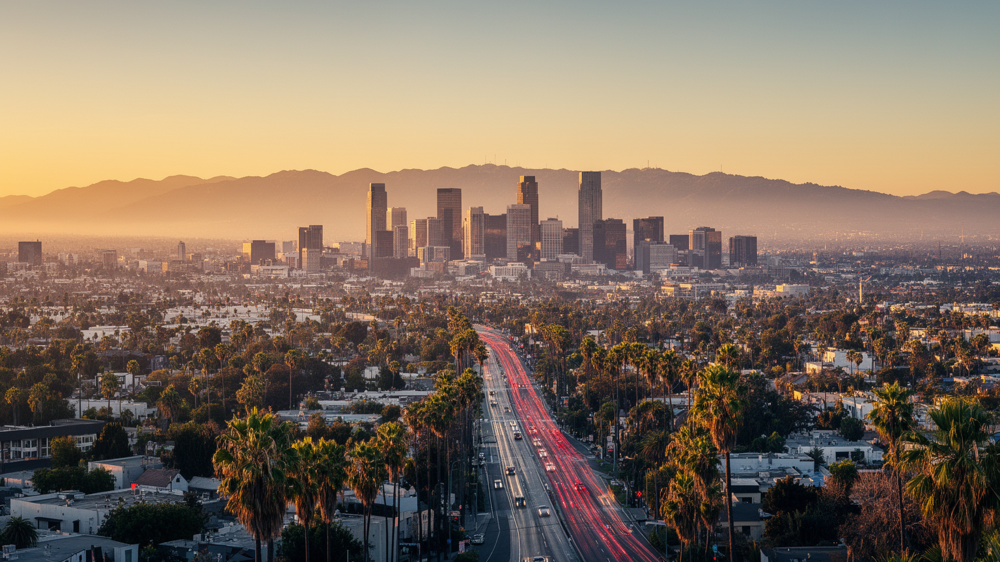
🇺🇸 アメリカ合衆国 / 北米 / World City Atlas
太平洋、港湾、映像産業、移民文化、山火事リスクが広い盆地に重なる都市。中心が一つに定まらないからこそ、高速道路、住宅地、スタジオ、港、ビーチ、郊外労働の関係から読む必要があります。
都市の骨格
ロサンゼルスは、太平洋岸の港と空港、サンガブリエル山地、乾いた盆地、無数のフリーウェイが作る都市圏です。映画のイメージだけでなく、物流、移民労働、住宅価格、気候リスクまで一体で見ると輪郭がはっきりします。
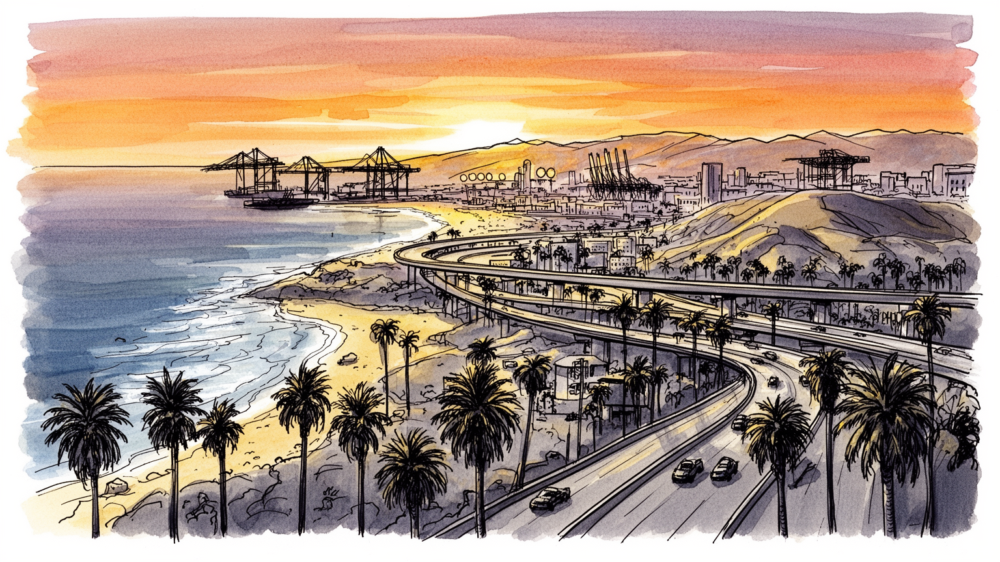
ロサンゼルスは太平洋岸の港湾、空港、軍需産業、アジア太平洋との交易を抱える都市圏です。メキシコ国境にも近く、移民、物流、安全保障、気候災害が重なります。海と山の間で世界と強く接続し続けていますね。
映画、音楽、ゲーム、広告の華やかさの裏で、港湾、倉庫、航空宇宙、アパレル、飲食、介護、建設、清掃が都市を動かします。非正規や移民労働も多く、創造産業と現場労働が同じ都市を現在も強く支えていますね。
ラテン系、アジア系、黒人、ユダヤ系、中東系の文化が重なり、カトリック、福音派、仏教、イスラム教、ユダヤ教、新宗教も見えます。食、音楽、映画、祭礼が地区ごとの記憶を作ります。祈りと表現が生活を支えています。
ビーチ、映画スタジオ、丘陵住宅地、テーマパーク、移民地区は魅力的ですが、住民には家賃、車依存、渋滞、ホームレス、山火事、大気汚染が日常です。観光の明るさと生活課題が現在も毎日深く隣り合っています。
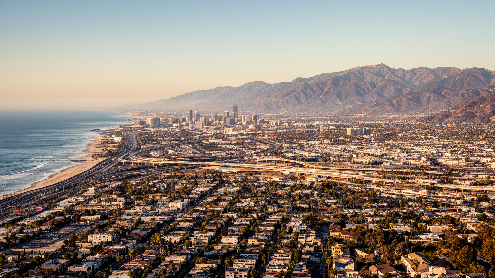
ロサンゼルスを読む入口は、中心市街地ではなく、太平洋、山地、盆地、フリーウェイの広がりです。都市圏は海岸から内陸へ長く伸び、港、空港、スタジオ、住宅地、倉庫、大学、軍需関連施設が離れて配置されています。鉄道駅前に全てが集まる都市ではなく、車で移動することを前提に住宅と仕事が広がったため、距離感そのものが生活の条件になります。ビーチの開放感、ハリウッドの丘、ダウンタウンの高層ビル、サンフェルナンド・バレー、ロングビーチ周辺の港湾は、同じ都市圏でありながら別々の顔を持ちます。高速道路は自由の象徴として描かれる一方、渋滞、大気汚染、所得差、地域分断も生みました。誰が海に近い地区へ住めるのか、誰が内陸から長く通勤するのかは、住宅価格と交通費で決まります。LAの地理は、広さの魅力と移動の負担を同時に見せます。山地と乾いた気候は景観を作りますが、山火事、土砂災害、水不足も抱えます。海と山の美しさは、都市の脆さとも隣り合っています。さらに港と空港は太平洋経済を開きますが、騒音や排気、倉庫立地の負担も特定地域へ集中します。近年は鉄道やバスの整備も進みますが、低密度に広がった都市構造を変えるには時間がかかります。移動の選択肢が少ないほど、車を持てない人の機会は狭くなります。都市の広さは豊かさであると同時に、アクセスの不平等を生みます。
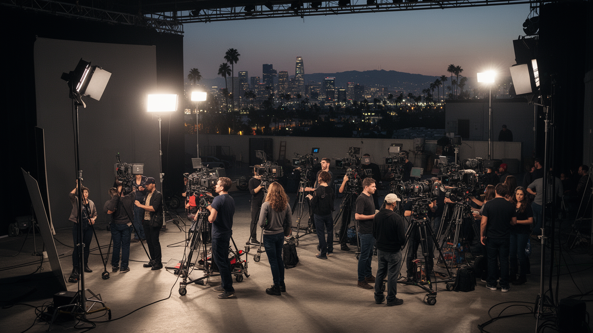
ロサンゼルスの世界的な力は、映画、テレビ、音楽、ゲーム、広告、配信産業が作る物語の力にあります。ハリウッドは地名であると同時に、世界中の人が都市や家族、恋愛、犯罪、未来、戦争、成功を想像するための装置です。ただし映像産業はスターや監督だけで成り立ちません。脚本、撮影、美術、衣装、照明、音響、編集、清掃、警備、運転、ケータリング、翻訳、権利管理、配信技術が巨大な分業を作ります。華やかなレッドカーペットの裏には、不安定な契約、長時間労働、組合交渉、性別や人種の代表性をめぐる争いがあります。LAの文化産業を読むには、スクリーンに映る夢と、制作現場で働く人の条件を同時に見る必要があります。映画は都市のイメージを売りますが、都市そのものの格差や暴力、移民生活も題材にしてきました。表現の自由は大きな魅力ですが、誰が物語を作り、誰が型にはめられるのかも問われます。配信時代には制作拠点が分散しても、LAには人材、資金、エージェント、学校、撮影所が集まり続けます。その集中が新しい機会と競争を同時に生みます。俳優や制作者を目指す若者が集まる一方、住居費と不安定な収入は夢を続ける条件を厳しくします。物語を作る都市は、夢を見る人の生活費にも責任を持っています。労働争議は作品の裏側にある不安を見せ、観客に届く物語が誰の時間で作られているかを可視化します。
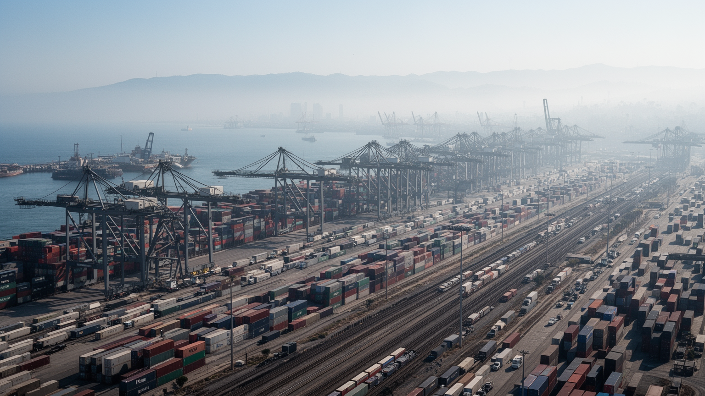
ロサンゼルスの経済を映像だけで見ると、港湾と物流の重さを見落とします。ロサンゼルス港とロングビーチ港は、アジア太平洋から入る商品をアメリカ内陸へ送る重要な入口で、コンテナ、鉄道、トラック、倉庫、配送センターが広い地域を結びます。店舗に並ぶ日用品、電子機器、衣類、部品は、海上輸送、港湾作業、通関、鉄道貨物、長距離トラック、ラストマイル配送を通って届きます。港は雇用を生みますが、排気ガス、騒音、交通事故、倉庫開発、低賃金労働の問題も周辺コミュニティに押しつけます。物流の効率は消費者には便利ですが、その便利さを支える労働者の健康や住環境は見えにくいままです。LAを太平洋都市として読むには、海辺の観光だけでなく、港のクレーン、貨物列車、倉庫街、トラックの列まで見る必要があります。国際貿易の変化、労働争議、感染症、燃料価格、地政学的緊張は、港を通じて都市の日常へ届きます。港湾は世界経済への窓であると同時に、環境正義の争点でもあります。きれいな海のイメージと、重い物流の現実が同じ海岸線にあります。脱炭素化や電動トラックの導入は必要ですが、費用負担、雇用、事業者の規模で差が出ます。港をきれいにすることは、労働と地域を切り捨てることではなく、健康を守る経済へ変えることです。港周辺の学校や住宅の空気を改善できるかが、貿易都市としての成熟を示します。
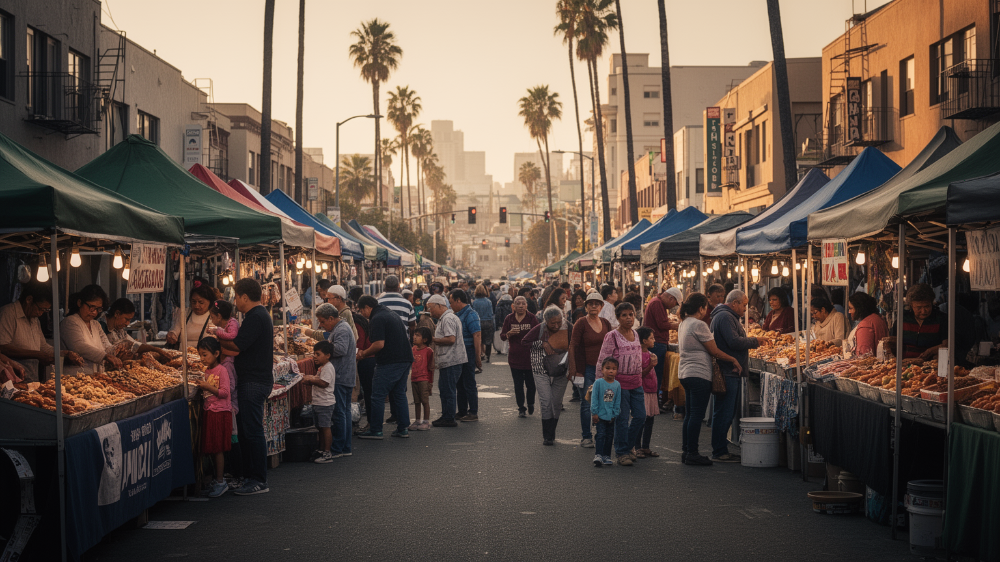
ロサンゼルスは、メキシコ、中央アメリカ、東アジア、東南アジア、中東、太平洋諸島から来た人々の生活が深く重なる都市です。スペイン語、韓国語、中国語、タガログ語、アルメニア語、ペルシア語などが地区ごとに聞こえ、食堂、礼拝所、学校、商店、労働市場を作ります。国境に近い都市であるため、移民政策、在留資格、家族分離、送金、労働搾取、警察との関係が日常の問題になります。一方で、移民文化はLAの食、音楽、映画、スポーツ、政治運動を豊かにしてきました。チカーノ文化、韓国系商業、日系の記憶、フィリピン系看護労働、中米系の家族ネットワークは、都市の経済と文化に不可欠です。移民地区は観光資源として消費されることもありますが、実際には家賃上昇、再開発、言語支援、学校格差、治安不安と向き合っています。LAを読むには、国境を越えて来た人々を単なる労働力としてではなく、都市の記憶と政治を作る主体として見る必要があります。移民の子どもたちは、英語と家庭の言語、アメリカの制度と家族の歴史の間で都市を作り直します。国境は遠い線ではなく、住宅、職場、学校、病院の中に現れる現実です。移民支援団体、教会、学校、地域メディアは、不安定な制度の中で生活を支える安全網です。多言語の都市であることは、公共サービスの設計にも反映されるべきです。
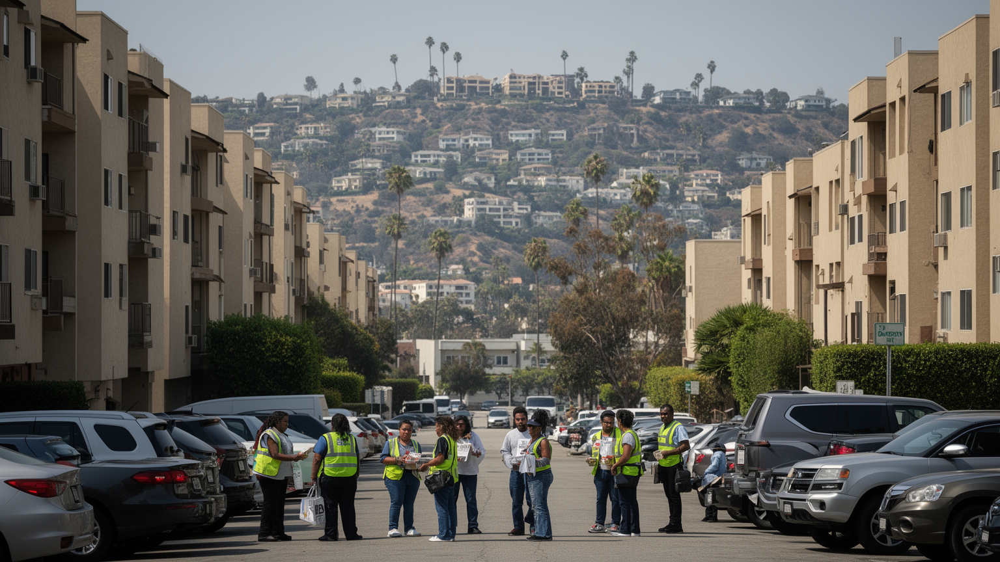
ロサンゼルスの住宅問題は、広い土地があるのに住みにくいという矛盾として現れます。丘陵住宅地や海沿いの高級地区、古い一戸建ての郊外、再開発されるダウンタウン、低所得者向け住宅、車中生活、路上のテントが同じ都市圏にあります。住宅供給の不足、低密度の土地利用、投資、家賃上昇、賃金の伸び悩み、医療や精神保健の不足が重なり、ホームレス問題は街路で可視化されます。単に個人の失敗として扱うと、都市の構造を見誤ります。映画産業やテック、観光が富を生んでも、清掃、介護、飲食、物流、警備、教育現場で働く人が近くに住めなければ、都市は持続しません。車社会は住宅不足を一時的に隠しますが、車中生活や長距離通勤として負担を個人に押しつけます。LAの住宅を読むには、豪邸やビーチの景観だけでなく、家賃補助、公共住宅、退去、シェルター、路上支援、地域の反対運動まで見る必要があります。住まいはプライベートな商品ではなく、労働、健康、教育、治安を支える社会基盤です。誰が都市に残れるのかは、LAの多様性が本物かどうかを測る基準になります。支援住宅や高密度化をめぐる議論は、近隣の不安と都市全体の責任がぶつかる場です。路上の人を見えなくするだけでは、住宅危機は解決しません。交通に近い場所へ住まいを増やすことも、長い通勤と排気を減らす政策になります。
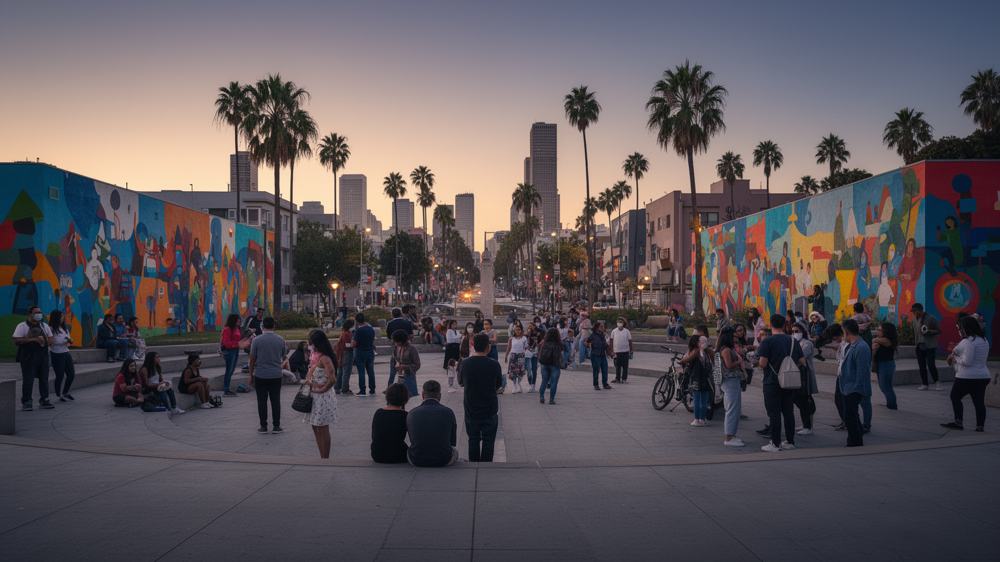
ロサンゼルスは多文化都市として語られますが、その歴史には人種差別、警察暴力、住宅分離、労働搾取、暴動の記憶が深くあります。黒人、ラテン系、韓国系、日系、先住民、中東系などのコミュニティは、移住、排除、商業、教育、宗教、政治運動を通じて都市を作ってきました。1992年の暴動は、警察への怒り、司法への不信、貧困、商店をめぐる緊張、メディア表象が重なった出来事として、今も都市の記憶に残ります。暴力の記憶は地区を固定的に見るためではなく、誰が守られ、誰が疑われ、誰が投資から取り残されたのかを考えるために必要です。LAでは壁画、音楽、映画、教会、地域団体、学校が、傷ついた記憶を語り直す場になってきました。多様性は単に多くの民族がいるという意味ではありません。異なる歴史を持つ人々が、警察、住宅、教育、医療、商業の制度の中でどのように扱われるかが問われます。観光の明るいイメージの背後に、差別と連帯の歴史を置くことで、LAはより現実的に見えてきます。街区ごとの記憶を聞くことは、都市を消費する視線から抜け出す第一歩です。近年の社会運動も、警察予算、学校、公共空間、記念碑をめぐって都市の記憶を更新しています。過去を隠さず話せることが、共存の条件になります。記憶の場所は大きな博物館だけではなく、壁画、商店、教会、学校の廊下にも残ります。
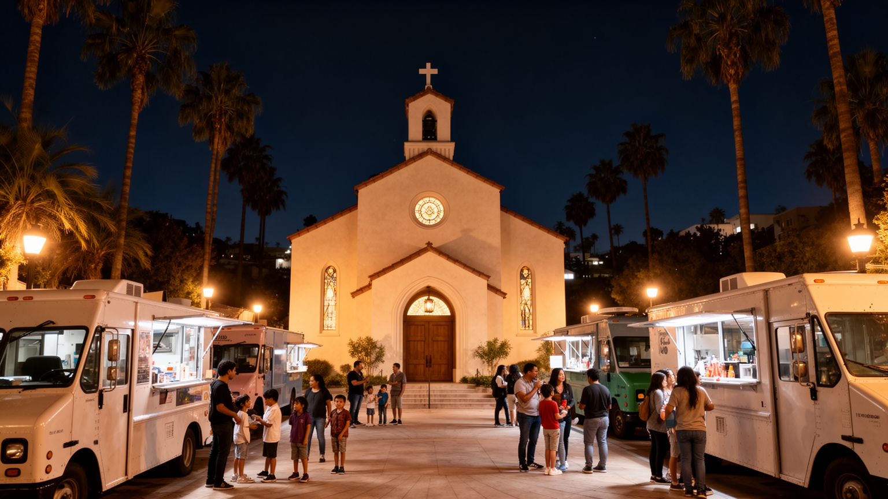
ロサンゼルスの文化は、映画スタジオやビーチだけでは説明できません。カトリック教会、福音派教会、黒人教会、シナゴーグ、仏教寺院、モスク、ヒンドゥー寺院、新宗教やスピリチュアルな実践が、広い都市圏の生活を支えています。宗教施設は祈りの場であると同時に、移民の相談、言語教育、食料支援、家族行事、葬儀、祭礼の拠点です。食文化も同じように多層で、タコス、韓国料理、ラーメン、フィリピン料理、アルメニア料理、エチオピア料理、ヴィーガン文化が地区ごとに表れます。音楽、壁画、ローライダー、スケート、サーフィン、ストリートファッションは、都市の路上から世界へ広がりました。LAの文化を読むには、観光客が訪れる名所だけでなく、日曜の礼拝、夜のフードトラック、学校の発表会、移民家族の祝い事を見る必要があります。文化は商品でもありますが、生活を守るネットワークでもあります。映画産業が都市のイメージを作る一方、地域の宗教と食は住民が都市に根を下ろす方法を作ります。多様性が続くには、安い店舗、住める家賃、集まれる公共空間が必要です。再開発で店が消えれば、味や祈りの場所も失われます。文化を守るとは、表現だけでなく場所を守ることでもあります。宗教施設や市場は、災害時には支援拠点にもなり、普段から地域の信頼を積み重ねています。
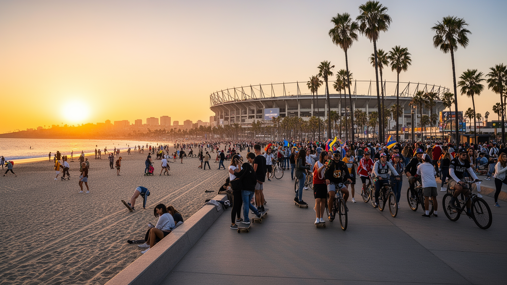
ロサンゼルス観光は、ビーチ、映画スタジオ、テーマパーク、丘陵の眺望、ショッピング、音楽、スポーツを組み合わせて成り立ちます。サンタモニカやヴェニスの海岸、ハリウッド、ダウンタウン、ミュージアム、メキシコ系やアジア系の食文化は、訪問者に多様な都市像を見せます。スポーツも大きな文化資本で、バスケットボール、野球、アメリカンフットボール、サッカー、サーフィン、スケートが地域の誇りとビジネスを作ります。しかし観光地は広く離れており、移動には車や配車、鉄道、バスを組み合わせる必要があります。観光客が見る開放感の背後には、駐車場、警備、清掃、ホテル、飲食、イベント設営、交通整理の労働があります。大型競技場やイベントは税収と知名度を生みますが、周辺の家賃上昇や交通混雑、公共資金の使い方も問われます。LAの観光を読むには、写真映えする場所だけでなく、観光と住民生活がどこで衝突するかを見る必要があります。ビーチの自由、映画の夢、スポーツの熱狂は、都市の魅力ですが、誰がその近くに住み、誰が働きに通うのかまで考えると、都市の実態が見えてきます。大会や撮影イベントで都市が注目されるほど、宿泊価格、警備、交通規制も生活に影響します。観光の成功は、住民が街を使い続けられるかで測る必要があります。地域の小さな店や海岸の公共性が残るほど、訪問者の経験も豊かになります。
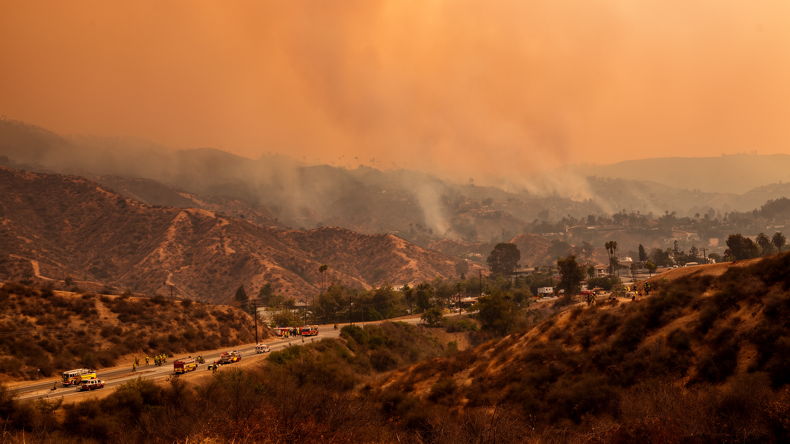
ロサンゼルスの気候は、明るい日差しと乾いた空気で都市の魅力を作りますが、同時に水不足、山火事、熱波、大気汚染を抱えます。雨が少ない地域で大都市を維持するには、遠方から水を引き、貯水、節水、再利用、緑地管理を続ける必要があります。山地と住宅地が接する場所では、乾燥、強風、植生、電力設備、避難路が火災リスクを高めます。煙は遠くの地区にも届き、子ども、高齢者、屋外労働者、呼吸器疾患を持つ人に影響します。高速道路と港湾物流は経済を支えますが、排気ガスと粒子状物質の負担を周辺住民へ集中させてきました。気候変動はLAを突然別の都市にするのではなく、すでにある住宅格差、交通格差、医療格差を強めます。涼める家、公園、木陰、空気清浄、避難情報へアクセスできる人と、そうでない人の差が命に関わります。LAの環境を読むには、青空と夕日の美しさだけでなく、誰が煙を吸い、誰が水を節約し、誰が火災保険を失うのかを見る必要があります。持続可能性は景観ではなく、生活を守る制度として問われています。太陽光、公共交通、節水、都市緑化は解決策になり得ますが、費用を払える人だけの対策では不十分です。気候への備えも、所得や地域で差が出ないように設計する必要があります。火災時の避難情報が多言語で届くか、車のない人が逃げられるかも重要です。
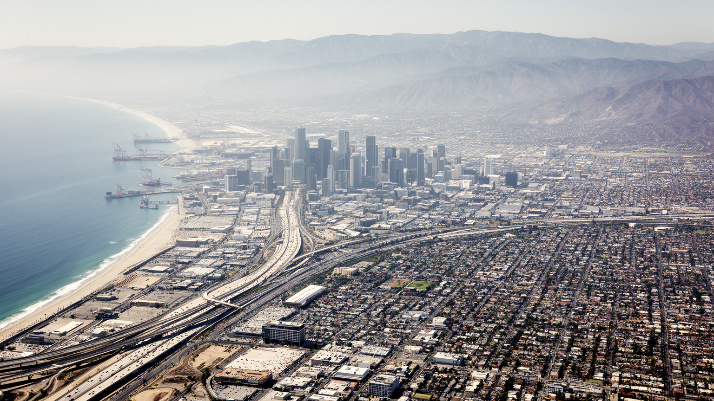
ロサンゼルスは、世界へ夢を送る都市であると同時に、その夢を作るための労働、移民、港湾、住宅、気候リスクが広い地図に散らばる都市です。映画や音楽は都市のイメージを強くしますが、LAの現実はスタジオの外にあります。港のクレーン、倉庫街、フリーウェイ、山火事の煙、路上のテント、移民地区の市場、教会、ビーチ、競技場、大学、丘陵住宅地を同じ都市圏として見る必要があります。中心が一つでないため、都市の問題も一つの広場に集まりません。家賃、通勤、健康、教育、災害、治安は地区ごとに違う形で現れます。LAの強さは、多様な人々が文化と産業を作り、太平洋経済と世界の想像力へ接続している点にあります。しかし、その強さは低賃金労働、住宅不足、環境負担、差別の歴史の上にも成り立っています。ロサンゼルスを読むことは、明るいイメージを否定することではありません。むしろ、その明るさを維持するために誰が移動し、働き、危険を引き受けているのかを見つめることです。海と山とスクリーンの都市は、世界都市の魅力と脆さを同時に示しています。LAは未来を想像する場所でありながら、未来の都市が避けられない住宅、移動、移民、気候の課題を早くから抱えています。その矛盾こそ、この都市を重要にしています。広がる都市だからこそ、見えないつながりを丁寧に追う必要があります。